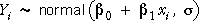

Models that explain variability in a response
The normal model for data in several groups is just one of many models that explain variability in a response measurement in terms of other variables. (Group membership can be treated as a categorical explanatory variable.)
| Response variable | Variables that explain some of its variability |
|---|---|
| Exam marks in a second year statistical methods course | Marks in a prerequisite first year statistics course explain some of the variability. Hours of study could explain further variability if this information is available. |
| Quality of apples received by a juicing factory | Part of the variability is explained by the source of the apples — apples from some regions (and possibly some farmers) are of better quality. |
| Numbers of customers in a cafe over several days | The daily number of customers is affected by the day of the week, and also by the season and the weather. |
In any model, some of the response variation is explained (in terms of explanatory variables) but some variation remains unexplained. Sums of squares are used to describe explained and unexplained (residual) variation and to test whether a simpler model that does not involve explanatory variables fits the data equally well.
Normal regression model
In the remainder of this section, we apply analysis of variance methodology to normal linear models that explain response variation in terms of a numerical explanatory variable, x.
|  |
or equivalently,
Explained and unexplained components
For the normal linear model, the least squares line provides the best parameter
estimates and predictions. The least squares line provides fitted values,  ,
for each observation. If the linear model is useful, these fitted values will
be different from the overall response mean.
,
for each observation. If the linear model is useful, these fitted values will
be different from the overall response mean.
The vertical distances of data points to the least squares line — the residuals — are left-over unexplained variation.

| Total component | These differences reflect the total variability of the response — without taking account of the explanatory variable. | |
| Explained component | These components describe how much the predicted response changes from using the least squares line (as opposed to simply using the overall mean as a prediction). | |
| Residual component | The residuals describe the extent to which the explanatory variable fails to predict the response. Their variation is not explained by the model. |
Airline complaints
The scatterplot below shows the number of complaints (per 100,000 passengers) and the proportion of flights arriving on time for the ten largest airlines in the USA in 1998.
The total component for each airline is initially represented as a green line in the scatterplot and a jittered dot plot is shown on the right. Click on any cross to discover the airline that it represents.
Use the pop-up menu to show the residual and explained components. In this data set, most of the variation in the complaint rates is explained by the proportion of late flights — the residuals are relatively small compared to the total components.